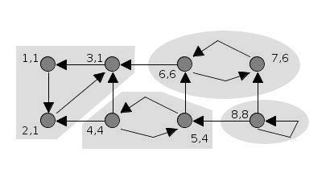

In this section, we explore captivating topics that are also crucial for mastering discrete mathematics: the intriguing world of graphs and paths!
Finally! We have arrived at Graph and Paths discussions, the last area of Discrete Revelations!
Three (3) selected topics under the concepts of graph theory, and paths are the following:
In mathematics and computer science, a Graph is a fundamental data structure representing a set of items called vertices or nodes connected by edges. Graphs are utilized across various domains to illustrate relationships and connections between elements. Let's delve into the basic components of graphs and their diverse types.
Vertices and Edges
■ Vertices
The essential elements of graphs are vertices, representing distinct entities like people, objects, or locations. Vertices could represent users, sites, or other relevant entities in your application.
■ Edges
Edges connect vertices, depicting relationships or interactions between different entities. Edges may have weights and can be directed or undirected.
Types of Graphs
■ Directed Graphs
In a directed graph, edges have a specific direction, indicating directed relationships. For example, social networks model friendships and following using directed edges.
■ Weighted Graphs
Weighted graphs assign weights or values to edges, representing quantitative measures such as distance or cost. They are used to simulate scenarios with varying strengths or capacities.
■ Connected Graphs
A connected graph ensures that every pair of vertices can be reached by a path, indicating a scenario where all entities can communicate with each other.

Examples and Applications
Social Networks
Graph models represent social networks like Facebook and Twitter, where each user is a vertex, and edges denote friendship or following relationships. Graph analysis helps identify communities and forecast interactions.
Transportation Networks
Graphs model transportation systems, such as road and aviation routes, where edges represent connections between locations. Graph algorithms aid in route optimization and traffic analysis.
Internet and Web Graphs
The Internet and World Wide Web can be viewed as a large graph, with web pages as vertices and links between pages as edges. Analyzing web graphs helps understand search engine algorithms and internet organization.
Graphs offer a versatile framework for describing and analyzing interactions between items across various fields. Different types of graphs capture different aspects of interactions, enabling in-depth analysis and prediction in social networks, transportation, the internet, and biology.
REFLECTION
Reflecting on Graphs and Graph Models
Studying graphs and graph models has underscored their vital role in representing and understanding connections and interactions across various domains. Graphs provide a powerful framework for visualizing complex networks, such as social relationships and transportation systems. My ability to analyze and solve problems in diverse fields has expanded through my exploration of graphs.
Understanding graphs has enabled me to effectively communicate relationships visually, mapping connections between entities or objects by identifying vertices and edges. This has been particularly valuable in studying information transmission, influence, and community discovery in social networks. Similarly, graphs help model connections between routes and locations in transportation networks, facilitating navigation and optimization.
In conclusion, delving into graphs and graph models has enhanced our understanding of complex networks and their applications across various fields. Graphs serve as effective visual representations of connections and interactions, enabling analysis, optimization, and problem-solving. Our ability to analyze graphs equips us with a range of tools for studying social networks, transportation systems, information flows, and more. The broad scope of graph model applications underscores their relevance and significance in comprehending and optimizing complex networks.
Eulerian paths and Hamiltonian paths are fundamental concepts in graph theory that concern graph traversal. Let's explore their definitions, properties, and applications:
Eulerian Path
An Euler path in a graph traverses each edge exactly once, starting and ending at different vertices. While vertices can be revisited, edges are traversed only once.
Properties
■ Eulerian paths exist in connected graphs with either zero or two vertices having an odd degree.
■ If a graph has an Eulerian path and no vertices with odd degrees, it is termed an Eulerian circuit, starting and ending at the same vertex.
Real-life Applications
■ In transportation networks, an Euler path ensures covering each road precisely once, like a garbage truck collecting waste without overlap.
■ Eulerian paths aid in circuit design for testing electrical components, ensuring each component is tested exactly once.
Hamiltonian Paths
A Hamiltonian path in a graph visits each vertex precisely once, covering all vertices without repetition.
Properties
■ Determining whether a graph has a Hamiltonian path is a computationally challenging NP-complete problem.
■ Hamiltonian paths are not guaranteed to exist in all graphs, even if they are connected.
Real-life Applications
■ Hamiltonian paths aid logistics and delivery services in selecting optimal routes to visit multiple destinations, minimizing time and distance.
■ In computer network design, Hamilton Paths ensure data packets traverse each network node precisely once.
In conclusion, Eulerian and Hamiltonian paths elucidate the concept of visiting each vertex or edge once, offering insights into graph traversal. Applications in real-world scenarios include logistics, circuit design, and transportation networks. These paths are discovered using various techniques, allowing for effective route planning and network optimization.
REFLECTION
Reflecting on Euler and Hamiltonian Paths
Our understanding of Euler and Hamiltonian paths and their significance in graph theory has deepened through our exploration. These paths provide insight into the traversal of networks of vertices and edges, demonstrating possibilities and limitations. Learning about these paths has expanded our comprehension of graph theory and its applications across various domains.
Understanding Euler paths allows us to determine whether a graph contains a path that traverses each edge precisely once. They find utility in network analysis, circuit design, and transportation planning. For instance, transportation systems can utilize Euler paths to find efficient routes covering all highways or optimize delivery schedules. Euler paths in circuit design ensure systematic and thorough connectivity of circuit elements.
On the other hand, Hamiltonian paths explore the feasibility of visiting each vertex precisely once while traversing the graph, revealing vertex connectedness and reachability. Applications for Hamiltonian paths span biology, computer science, and network design. In computer science, they aid in creating algorithms for path optimization and network design, while in biology, they represent protein folding and DNA sequencing.
In summary, studying Euler and Hamiltonian paths has enriched our understanding of graph theory and its diverse applications. These paths enable analysis and optimization of networks by revealing connections and traversals. While Hamiltonian paths find applications in network design, computer science, and biology, Euler paths contribute to circuit design and transportation system optimization. Familiarity with these paths equips us with valuable tools for examining connectivity and creating effective systems across various disciplines.
Finding the shortest path between two vertices in a graph is the goal of the shortest
path problem, which is a fundamental problem in graph theory. It has significant
uses in a variety of fields, including resource allocation, network routing,
and navigation systems. Let's examine the significance of the shortest path
problem, go over popular approaches to addressing it, and look at some real-world examples.
Shortest-Path Problem Implications
Efficient Routing
The shortest path is used in network routing to identify the fastest way for data
packet transmission, reducing lag, and improving network performance.
Navigation Systems
The best way to get to a location in terms of distance, time, or other criteria
is to be found using the shortest path algorithm, which is used in navigation software.
Social Network Analysis
In social network analysis, shortest paths are used to identify prominent individuals
and gauge the degree of connectional intimacy between people.
Examples and Applications
Navigation Systems
Utilizing elements like road networks and real-time data, applications like Google Maps use shortest-path
algorithms to present the optimal route depending on distance, travel time, and traffic conditions.
Airline Travel
Shortest path algorithms are used by airlines to improve aircraft schedules and routes,
assuring smooth connections between various destinations and cutting down on travel time.
Resource Planning
Shortest path algorithms are used in sectors like logistics and supply chain management to
optimize the flow of goods, vehicles, and resources in order to save costs and boost
delivery effectiveness.
Graph theory is not complete without the shortest path problem and related methods,
which have a wide range of real-world uses. These algorithms make resource planning,
routing, navigation, and social network analysis more effective, which eventually
results in process optimization, lower costs, and better decision-making.
REFLECTION
Sip on thought-provoking reflections and insights in, Shortest-Path Problem, one of the discrete delicacies!
I have a newfound understanding for the shortest path problem's significance to graph theory and its pervasive use
in everyday situations as I reflect on my hunt for the problem. The goal of the shortest path issue is to determine
the most effective route between any two locations on a graph given the costs or weights attached to each edge.
Our knowledge of various techniques for resolving these issues has given us useful tools for resource allocation,
network communications, and route optimization.
Examining several shortest path techniques, such as Bellman-Ford's algorithm and Dijkstra's algorithm, helped me
better comprehend graph traversal and optimization. These algorithms search for the least expensive path by taking
into account the edge weights. You can use them to solve complicated optimization problems in an effective
and methodical manner, empowering you to manage resources wisely and make well-informed judgments.
The study of the shortest path problem has led to a better understanding of its numerous uses and the significance
of it for route optimization, network communication, and resource allocation. Understanding these issues and the
algorithms employed to resolve them has given us useful tools for enhancing productivity and making sensible
choices in logistics, network planning, and transportation. In a variety of real-world applications, the shortest
path problem is crucial for maximizing resource usage and enhancing overall system performance.